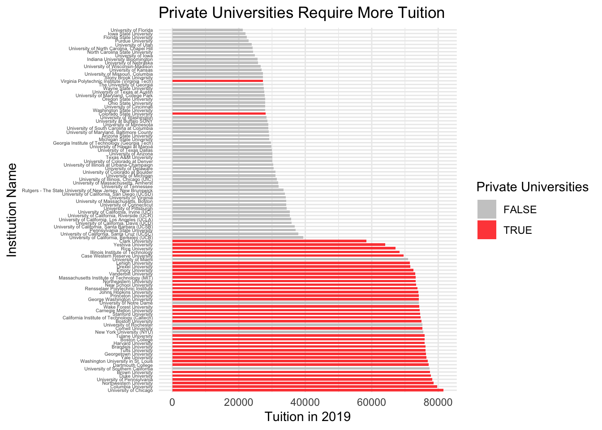
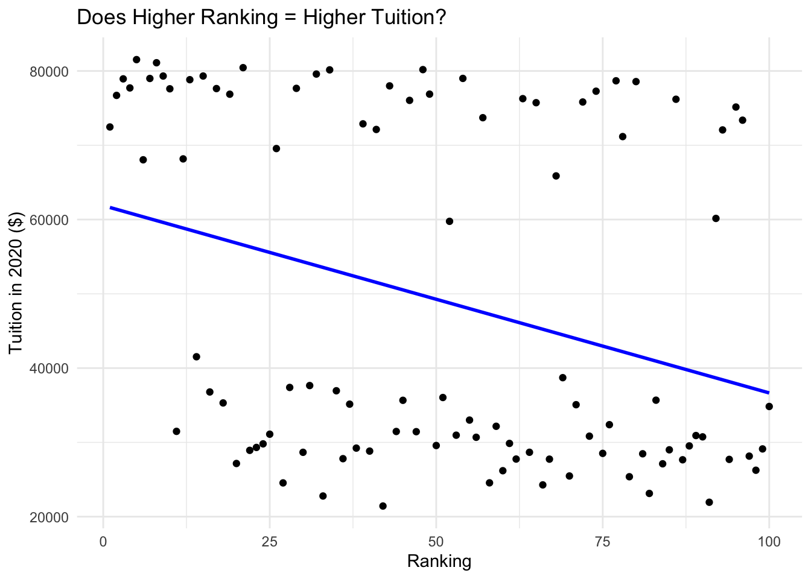
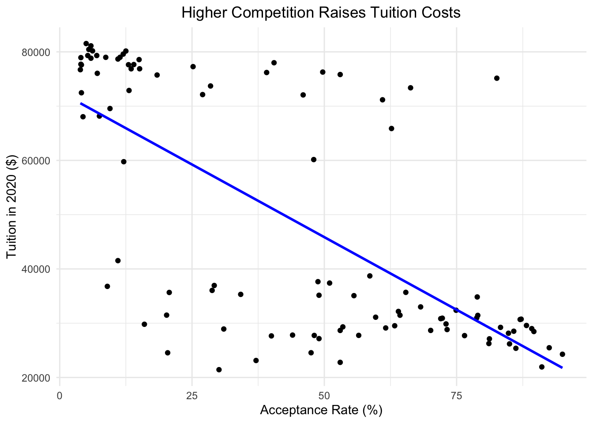

Final Report
Introduction
Higher education is a journey that holds the promise of personal growth, intellectual development, and more career opportunities. As students begin on this path, one consideration is the cost of attending a university. A big assumption in society is that prestigious universities, characterized by their high academic standards, faculty, and research facilities, tend to come with a hefty price tag. This project dives into the question: to what extent do prestigious universities indeed have higher tuition costs? Understanding the relationship between university prestige and tuition costs is very important for prospective students and their families. The financial investment required for a college education is a huge factor in decision-making for the majority of America, and unraveling the way prestige influences tuition can help individuals make good choices about where to pursue their higher education.
Research Question
- To what extent do prestigious universities tend to have higher tuition costs?
- Is there a strong correlation between university rankings and tuition costs?
- How does the difference between public and private universities contribute to variations in the relationship between prestige and affordability?
Data Sources
For this project, we used two sets of data.
The first one was 2020-QS-World-University-Rankings.xlsx https://www.kaggle.com/datasets/divyansh22/qs-world-university-rankings/data?select=2020-QS-World-University-Rankings.csv This data set gave us the top university rankings in the entire world. Since we were only examining schools in the U.S, we filtered out the countries that weren’t in the U.S. Tuition Spreadsheet.xlsx. This data has been pre-processed from the QS World University Rankings.
The second data set was https://nces.ed.gov/fastfacts/display.asp?id=76 This detailed the tuition rates schools in the U.S in 2019 and 2020. We used the filtering from QS-World Ranking to filter the data set to only leave the top schools in this tuition spreadsheet. This data is an original source and was collected by the government. There are no biases of any sort in this data, as these are hard numbers that can be cross-checked for confirmation of validity.
Data Cleaning
| Variable | Description |
|---|---|
| Institution Name | The name of the University |
| Rank in 2019 | Rank of the University in 2019 |
| Rank in 2020 | Rank of the University in 2020 |
| Tuition in 2019 | The Tuition of the University in 2019 |
| Tuition in 2020 | The Tuition of the University in 2020 |
| Private Universities | Whether the school is Private or Public (TRUE or FALSE) |
| Acceptance Rate | The number of total applicants to accepted students (%) |
Analysis and Figures
In the first part of our research we wanted to to examine if there was a correlation between tuition and universities that were private versus ones that are public. This graph explores that correlation.
In this chart we ranked schools by tuition and color-coded private universities to highlight their positions in the tuition spectrum. A pattern emerged showing that private universities, marked by red, are clustered towards the upper end of the tuition scale. This proves that a significant proportion of private institutions tend to have higher tuition costs compared to their public counterparts. This observation aligns with the notion that private institutions frequently invest in extensive resources, faculty, and specialized programs, factors that may contribute to their higher cost of attendance. Next, we will look at how a ranking of the top 100 universities in America compares to tuition cost.
Code
ggplot(ranked_data, aes(x = `Rank in 2020`, y = `Tuition in 2020`, label = `Institution Name`)) +
geom_point() +
geom_smooth(method = "lm", color = "blue", se = FALSE) + # This adds a linear regression line
labs(title = "Does Higher Ranking = Higher Tuition?",
x = "Ranking",
y = "Tuition in 2020 ($)") +
theme_minimal()`geom_smooth()` using formula = 'y ~ x'Warning: The following aesthetics were dropped during statistical transformation: label
ℹ This can happen when ggplot fails to infer the correct grouping structure in
the data.
ℹ Did you forget to specify a `group` aesthetic or to convert a numerical
variable into a factor?
The concentration of points in the top-left region of the plot (high ranking, high tuition) suggests that universities with extremely high rankings tend to have higher tuition fees. This observation aligns with the common perception that prestigious or highly-ranked institutions often come with higher costs. The scattered distribution of points across the rest of the plot indicates a lack of a clear and strong linear relationship between university rankings and tuition fees. In other words, as the rankings go down, there isn’t a consistent and linear change in tuition fees for the majority of schools. The weak trend observed can be attributed to the diversity of factors influencing tuition fees, which may vary widely among different institutions and regions. Regional economic conditions, cost of living, and state funding can contribute to this variance in price. Therefore, even if two schools have similar rankings, their tuition fees may differ significantly based on their location. Other institutional characteristics, such as private vs. public status, endowment size, and program offerings, can also impact tuition. Schools with similar rankings may have different financial structures and resources, leading to varying tuition fee structures. After observing the correlation between tuition and ranking, this led us to diving into our sub question of paying for prestige. During our research, we noted that schools with a lower acceptance rate tended to be ranked higher on the ranking list. We needed more proof on this theory, so we used the graph below to explore this:
`geom_smooth()` using formula = 'y ~ x'
The linear regression line (the blue line) is sloping downwards, which suggest a general trend that as the acceptance rate decreases (meaning school is more selective), the tuition price tends to be higher. This could indicate that more prestigious schools with lower acceptance rates charge higher tuition fees. Also, there is a wide spread of data points, especially among institutions with higher acceptance rates. This indicates that for schools with less selectivity, tuition can vary significantly. There are some institutions with high tuition prices regardless of their acceptance rate, as well as some with low tuition prices across a range of acceptance rates. These outliers could represent schools that are exceptions to the general trend for various reasons, such as public universities that often have lower tuition rates but vary in selectivity. While there is a trend indicated by the regression line, the individual data points show that tuition is not solely determined by acceptance rate. Other factors likely play significant roles in determining tuition prices, such as whether the institution is public or private, its location, the cost of living in the area, endowments, and the range of facilities and programs offered. More prestigious institutions (with lower acceptance rates) tend to charge more. This is possibly due to the perceived value of the education provided, the demand for a limited number of spots, and the reputation of the institution. # Conclusions In conclusion, our exploration into the relationship between university prestige and tuition costs has yielded valuable insights for prospective students and their families. The overarching question guiding our research was: to what extent do prestigious universities tend to have higher tuition costs? Through the analysis of data from the 2020 QS World University Rankings and tuition rates for U.S. schools in 2019 and 2020, we have uncovered several key findings.
Firstly, our investigation into the correlation between university rankings and tuition costs revealed a notable pattern. Private universities, marked by red in our graph, were clustered towards the upper end of the tuition scale, indicating a significant proportion of private institutions tend to have higher tuition costs compared to public counterparts. This aligns with the expectation that private institutions often invest in extensive resources, faculty, and specialized programs, contributing to their higher cost of attendance.
Further delving into the relationship between university rankings and tuition fees, we found that while there is a concentration of points in the top-left region of the plot (indicating high rankings and high tuition), the overall distribution across the plot lacks a clear and strong linear relationship. This observation underscores the influence of diverse factors, such as regional economic conditions, cost of living, state funding, and institutional characteristics, on tuition fees.
Our exploration of the sub-question regarding the payment for prestige revealed an intriguing trend. Schools with lower acceptance rates, indicative of higher selectivity, tended to be ranked higher on the ranking list. The linear regression analysis showed a general trend that as acceptance rates decrease, tuition prices tend to be higher. This suggests that more prestigious schools with lower acceptance rates may charge higher tuition fees due to the perceived value of education, limited spots, and the institution’s reputation.
However, it’s essential to note that tuition is not solely determined by acceptance rate. Our data points highlighted the significant influence of other factors, including whether the institution is public or private, location, cost of living, endowments, and the range of facilities and programs offered. The wide spread of data points, especially among institutions with higher acceptance rates, indicates the variability in tuition even within similar selectivity categories.
In essence, our findings underscore the complexity of the factors influencing tuition costs and challenge the simplistic notion that prestige alone is the sole driver of higher costs. Prospective students are encouraged to consider a holistic view of various factors when making decisions about higher education, weighing the perceived value of prestigious institutions against their individual circumstances and priorities.
Attributions
All members contributed equally. ### Appendix
Code
library(tidyverse)
library(readxl)
library(here)
library(janitor)
library(dplyr)
library(ggplot2)
library(cowplot)
rank_data <- read_excel(
here::here("data_raw", "2020-QS-World-University-Rankings.xlsx")
) %>%
filter(Country == "United States") %>%
slice(1:100) %>%
select('Institution Name', 'Rank in 2019', 'Rank in 2020') %>%
arrange(`Institution Name`) %>%
clean_names() %>%
mutate(
rank_in_2019 = parse_number(rank_in_2019),
rank_in_2020 = parse_number(rank_in_2020)
) %>%
rename(
'Rank in 2019' = rank_in_2019,
'Rank in 2020' = rank_in_2020,
'Institution Name' = institution_name
)
tuition_data <- read_excel(
here::here("data_raw", "Tuition Spreadsheet.xlsx")
) %>%
filter(`Tuition Type` == 'On-campus in-state') %>%
select(`Institution Name`, everything()) %>%
arrange(`Institution Name`) %>%
rename(
`Tuition in 2020` = `2020.0`,
`Tuition in 2019` = `2019.0`
) %>%
select(`Institution Name`, `Tuition in 2019`, `Tuition in 2020`)
merged_data <- rank_data %>%
left_join(tuition_data, by = "Institution Name")
Clean_Data <- merged_data %>%
mutate(
`Private Universities` = ifelse(
`Institution Name` %in% c(
'Boston College',
'Boston University',
'Brandeis University',
'Brown University',
'California Institute of Technology (Caltech)',
'Carnegie Mellon University',
'Case Western Reserve University',
'Clark University',
'Colorado State University',
'Columbia University',
'Cornell University',
'Dartmouth College',
'Drexel University',
'Duke University',
'Emory University',
'George Washington University',
'Georgetown University',
'Harvard University',
'Illinois Institute of Technology',
'Johns Hopkins University',
'Lehigh University',
'Massachusetts Institute of Technology (MIT)',
'New School University',
'Northeastern University',
'Northwestern University',
'Princeton University',
'Rensselaer Polytechnic Institute',
'Rice University',
'Stanford University',
'Tufts University',
'Tulane University',
'University of Chicago',
'University of Pennsylvania',
'Vanderbilt University',
'Virginia Polytechnic Institute (Virginia Tech)',
'Wake Forest University',
'Washington University in St. Louis',
'Yale University',
'Yeshiva University'
),
TRUE,
FALSE
)
)
ranked_data <- Clean_Data %>%
arrange(`Rank in 2020`) %>%
mutate(`Rank in 2020` = row_number())
Clean_Data %>%
ggplot() +
geom_col(
aes(x = `Tuition in 2019`, y = reorder(`Institution Name`, -`Tuition in 2019`), fill = `Private Universities`),
width = 0.7, alpha = 0.8
) +
labs(
title = 'Private Universities Require More Tuition',
x = 'Tuition in 2019',
y = 'Institution Name'
) +
theme_minimal() +
theme(axis.text.y = element_text(size = 4)) +
scale_fill_manual(values = c('TRUE' = 'red', 'FALSE' = 'gray'))
ggplot(ranked_data, aes(x = `Rank in 2020`, y = `Tuition in 2020`, label = `Institution Name`)) +
geom_point() +
geom_smooth(method = "lm", color = "blue", se = FALSE) + # This adds a linear regression line
labs(title = "Does Higher Ranking = Higher Tuition?",
x = "Ranking",
y = "Tuition in 2020 ($)") +
theme_minimal()
data <- read_excel("data_processed/merged_data.xlsx")
ggplot(data, aes(x = `Acceptance Rate`, y = `Tuition in 2020`)) +
geom_point() + # This adds the scatterplot points
geom_smooth(method = "lm", color = "blue", se = FALSE) + # This adds a linear regression line
theme_minimal() +
labs(title = "Higher Competition Raises Tuition Costs",
x = "Acceptance Rate (%)",
y = "Tuition in 2020 ($)") +
theme(plot.title = element_text(hjust = 0.5)) # Center the plot title